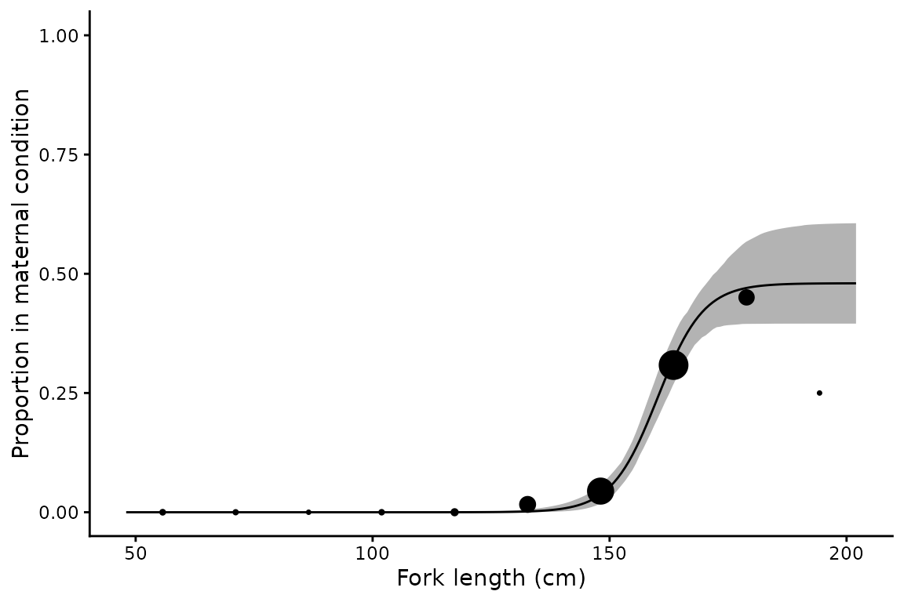
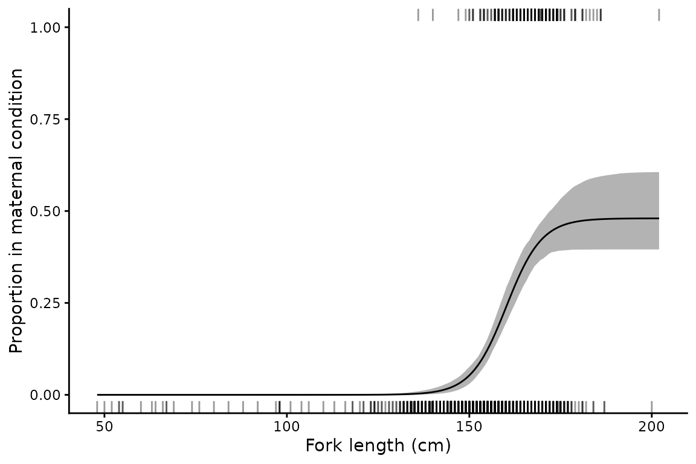
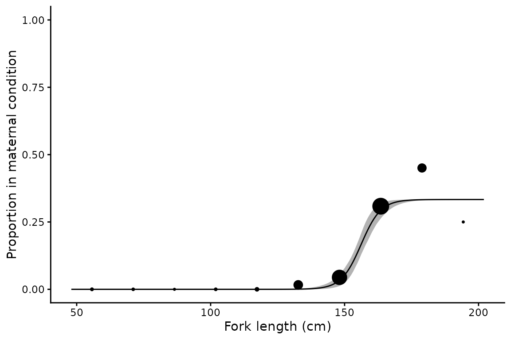
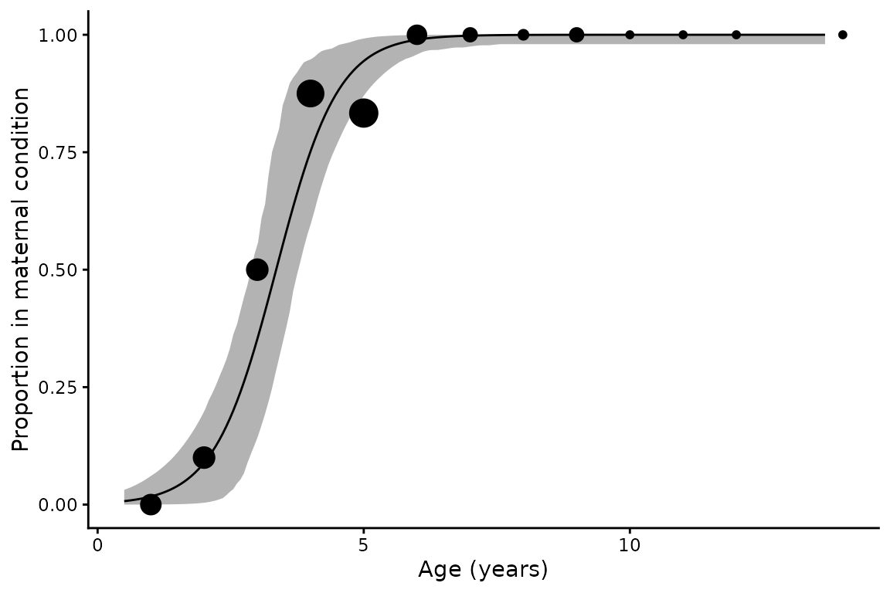

Length at maternity analysis
maternity.RmdBackground
A maturity ogive describes the proportion of females that are sexually mature at a given length or age. For most teleosts that is sufficient for calculating reproductive capacity, since mature females spawn every year. Chondrichthyans differ. Many species reproduce biennially or triennially, so that in any one year only a fraction of mature females are gravid, and gestation may run for longer than a year. The quantity a population model needs is therefore not the proportion mature but the proportion in maternal condition, meaning females that will give birth or lay eggs by the end of the year and so contribute to recruitment at the start of the next (Walker 2005).
Walker (2005) modelled this with a three-parameter logistic function (3PLF) whose upper asymptote is free to sit below one:
Here
is a Bernoulli variable indicating whether female
is in maternal condition,
and
are the lengths or ages at which 50% and 95% of the maximum are
maternal, and
is that maximum: the proportion of the largest females in maternal
condition in a given year. For an annual cycle
,
for a biennial cycle
,
and for a triennial cycle
. When
the model reduces to the ordinary two-parameter maturity ogive fitted by
maturity(), and since the parameterisation is shared the
two are directly comparable.
Harry et al. (2024) compared two ways of using this model. In the 3PLF-fixed approach of Walker (2005), is chosen from knowledge of the ovarian and uterine cycles and only and are estimated. In the 3PLF-estimated approach, is estimated along with the other parameters. Simulation showed that estimating is feasible, often improves accuracy and interval coverage relative to a fixed value, and allows reproductive periodicity to be inferred from the data rather than assumed. The cost is sample size: 100–200 maternal females were typically needed for accurate estimation.
maternity() implements both approaches. The model is
written in RTMB and fitted by maximum likelihood, with
bootstrap confidence intervals.
The data
The example data are the empirical case study from Harry et al. (2024): maturity and maternity at length for female sandbar sharks, Carcharhinus plumbeus, from the Gulf of Mexico and western North Atlantic. It combines the reproductive studies of Baremore and Hale (2012) and Piercy et al. (2016), with maternal condition assigned to each individual.
library(mustelus)
data(sandbar)
str(sandbar)
#> 'data.frame': 1087 obs. of 4 variables:
#> $ FL : num 145 146 149 182 148 151 132 168 160 155 ...
#> $ maturity_stage : int 1 0 0 0 1 1 0 1 0 1 ...
#> $ maternity_stage: int 0 0 0 0 0 1 0 0 0 0 ...
#> $ source : chr "Baremore" "Baremore" "Baremore" "Baremore" ...
c(
females = nrow(sandbar),
mature = sum(sandbar$maturity_stage, na.rm = TRUE),
maternal = sum(sandbar$maternity_stage)
)
#> females mature maternal
#> 1087 640 206Fork length is in centimetres. Note that maternal condition is
recorded for every female, while maturity_stage has a small
number of missing values.
Basic usage
By default is estimated from the data:
mt <- maternity(maternity_stage, FL, data = sandbar, times = 500)
summary(mt)
#> # A tibble: 1 × 15
#> method m50 m50_lower m50_upper m95 m95_lower m95_upper pmax pmax_lower
#> <chr> <dbl> <dbl> <dbl> <dbl> <dbl> <dbl> <dbl> <dbl>
#> 1 3PLF-est… 160. 157. 164 174. 168. 183. 0.480 0.396
#> # ℹ 6 more variables: pmax_upper <dbl>, n <int>, N <int>, nll <dbl>, AIC <dbl>,
#> # convergence <lgl>The summary reports the three parameters with bootstrap 95%
confidence intervals, the number of females (n) and the
number in maternal condition (N), the negative
log-likelihood and AIC, and whether the optimiser converged with a
positive-definite Hessian.
is estimated at 0.48 (0.4–0.61), so roughly half of the largest females are in maternal condition in any year. That is what a biennial cycle looks like. Half of is reached at 160.1 cm.
Plotting
plot() returns a ggplot object. The default shows binned
observed proportions scaled by sample size, with the fitted curve and a
bootstrap 95% confidence ribbon:

The curve levels off well short of one, which is the whole point of the third parameter. A two-parameter ogive forced through an asymptote of one could not describe these data.
The same raw_data options as maturity() are
available: "proportions", "point",
"rug", "bootstrap" (a subsample of the
resampled curves in place of the ribbon) and "none".

Fixing the asymptote and testing reproductive periodicity
Supplying pmax fixes the asymptote and estimates only
and
.
This is appropriate when the reproductive cycle is known from other
evidence, and it is the only workable option when maternal females are
too few to estimate
.
It also provides a way of testing competing hypotheses about
periodicity: fit the model under each and compare AIC.
Reproductive periodicity in sandbar sharks has been reported as biennial by some studies and as longer by others, so both are worth fitting:
mt_biennial <- maternity(maternity_stage, FL, data = sandbar, pmax = 0.5, times = 500)
mt_triennial <- maternity(maternity_stage, FL, data = sandbar, pmax = 1/3, times = 500)
fits <- rbind(summary(mt), summary(mt_biennial), summary(mt_triennial))
fits$model <- c("3PLF-estimated", "3PLF-fixed, biennial", "3PLF-fixed, triennial")
fits$dAIC <- round(fits$AIC - min(fits$AIC), 2)
fits[, c("model", "m50", "m95", "pmax", "AIC", "dAIC")]
#> # A tibble: 3 × 6
#> model m50 m95 pmax AIC dAIC
#> <chr> <dbl> <dbl> <dbl> <dbl> <dbl>
#> 1 3PLF-estimated 160. 174. 0.480 836. 1.9
#> 2 3PLF-fixed, biennial 161. 176. 0.5 834. 0
#> 3 3PLF-fixed, triennial 156. 167 0.333 848. 14.2A biennial cycle is strongly supported over a triennial one, by 14.2 AIC units. The fixed biennial model also edges out the estimated model by 1.9 units, but since it has one fewer estimated parameter the two have essentially the same support given the data. This reproduces the result reported by Harry et al. (2024).
The estimated model is doing useful work even where a fixed model fits equally well, because the confidence interval on shows what the data can and cannot resolve. Here it excludes 1/3 but comfortably includes 0.5.

Forcing the asymptote down to 1/3 pulls the curve below the observed proportions at large sizes, which is the source of the AIC penalty.
Comparison with maturity
Both variables are recorded for these sharks, so the maturity and maternity ogives can be fitted to the same animals and compared directly. The parameterisations match, so and mean the same thing on the same scale:
mat <- maturity(maturity_stage, FL, data = sandbar, times = 500)
data.frame(
ogive = c("Maturity", "Maternity"),
x50 = c(summary(mat)$L50, summary(mt)$m50),
x95 = c(summary(mat)$L95, summary(mt)$m95),
n = c(summary(mat)$n, summary(mt)$n)
)
#> ogive x50 x95 n
#> 1 Maturity 151.3 168.0 1065
#> 2 Maternity 160.1 174.4 1087Half of females are mature at 151.3 cm but half of the maternal maximum is not reached until 160.1 cm, so the maternity curve sits to the right of the maturity curve as well as below it. Harry et al. (2024) note that effectively provides a lower bound for , which is a useful check on a fit and a source of prior information where maternal data are sparse.
This comparison also shows what is lost by substituting one for the other. Using the maturity ogive in place of the maternity ogive would credit every mature female with annual reproduction, overstating reproductive output by roughly a factor of two here, and would place the onset of reproduction some 9 cm too early.
Using age as the predictor
Any continuous predictor can be used. The sandbar data contain no
ages, but spottail does:
data(spottail)
mt_age <- maternity(maternity_stage, age_agree, data = spottail, times = 500)
summary(mt_age)[, c("m50", "m50_lower", "m50_upper", "m95", "pmax", "n", "N")]
#> # A tibble: 1 × 7
#> m50 m50_lower m50_upper m95 pmax n N
#> <dbl> <dbl> <dbl> <dbl> <dbl> <int> <int>
#> 1 3.36 2.89 3.78 5.07 1 85 57
Spot-tail sharks reproduce annually, so is estimated close to one and the maternity curve is nearly the same as a maturity ogive.
Sample size
Harry et al. (2024) found that estimating accurately generally required 100–200 maternal females. The sandbar data contain 206, which is why the interval on above is reasonably tight. With smaller samples the estimate becomes unstable, and the bootstrap will report replicates that failed to converge or contained no maternal females.
Where maternal data are sparse, fixing pmax from
independent evidence on the ovarian and uterine cycles is the more
defensible choice. The AIC comparison above is then the way to check
that the chosen value is at least consistent with the data.
Output structure
The result is a one row tibble with list columns. mods
holds the RTMB objective function, the nlminb
result, and the sdreport, which gives asymptotic standard
errors as an alternative to the bootstrap:
summary(mt$mods[[1]]$sdreport, "fixed")
#> Estimate Std. Error
#> m50 160.1332890 1.64364813
#> m95 174.4099208 3.58536832
#> pmax 0.4800549 0.05084888
# Bootstrap parameter estimates, one row per replicate
head(mt$boot_coefs[[1]])
#> m50 m95 pmax
#> 1 159.2499 172.4716 0.4642783
#> 2 161.0113 176.1331 0.5127472
#> 3 162.2913 176.3678 0.5852862
#> 4 161.9157 178.5714 0.5409618
#> 5 158.6454 170.1597 0.4268599
#> 6 161.0868 177.4966 0.5451289References
Baremore, I.E. and Hale, L.F. (2012) Reproduction of the sandbar shark in the western North Atlantic Ocean and Gulf of Mexico. Marine and Coastal Fisheries 4(1), 560–572. doi:10.1080/19425120.2012.700904
Harry, A.V., Baremore, I.E. and Piercy, A.N. (2024) Quantifying maternal reproductive output of chondrichthyan fishes. Canadian Journal of Fisheries and Aquatic Sciences 81(10), 1481–1494. doi:10.1139/cjfas-2024-0031
Piercy, A.N., Murie, D.J. and Gelsleichter, J.J. (2016) Histological and morphological aspects of reproduction in the sandbar shark Carcharhinus plumbeus in the U.S. south-eastern Atlantic Ocean and Gulf of Mexico. Journal of Fish Biology 88(5), 1708–1730. doi:10.1111/jfb.12945
Walker, T.I. (2005) Reproduction in fisheries science. In: Hamlett, W.C. (ed) Reproductive Biology and Phylogeny of Chondrichthyes: Sharks, Batoids and Chimaeras. Science Publishers, Enfield, NH, pp. 81–127.